HPC101超算短学期¶
谈谈如何让自己看上去、闻上去都像一个CS人
https://www.cc98.org/topic/5370849
Stack Overflow
https://stackoverflow.com
电子书
http://libgen.is/
https://z-epub.com/
MIT missing semester
https://missing.csail.mit.edu/2020/
CS自学指南
https://csdiy.wiki/
Dev on Windows with WSL
https://dowww.spencerwoo.com/
ZJUSCT OpenDocs
https://zjusct.pages.zjusct.io/ops/opendocs/
Lab0：Linux Crash Course¶
参考的文档
https://zjusct.pages.zjusct.io/summer_hpc101_2024/hpc-101-labs-2024/Lab0-LinuxCrashCourse/
https://101.lug.ustc.edu.cn/#contact-us
Obtain a Linux Virtual Machine - [x] Install a hypervisor on your computer - [x] Create a new virtual machine in the hypervisor - [x] Install a Linux distribution in the virtual machine Linux Basics - [x] Command Line Interface (CLI) - [x] Linux File System - [x] Package Management Remote Access - [x] Network Basics - [x] SSH More on Linux - [x] Users and Permissions - [x] Environment Variables Git - [x] Register a ZJU Git account - [x] Configure Public Key - [x] Clone a Repository
0.1 创建虚拟机&安装配置Linux环境¶
一脸懵逼，选择了在 VMware Workstation 中安装 Ubuntu，其中VMwar Workstation Pro是一个虚拟机管理软件（虚拟化软件），Ubuntu是我要给这个虚拟化软件中的虚拟机加装的系统。当然，还可以直接在电脑上加装Linux，用WSL+vscode就不用虚拟机了，据说体验很好，之后可能会用到。安装过程参考
https://ibug.io/cn/2019/02/setup-ubuntu-in-vmware/
安装VMware Workstation有个该死的跳转到博通的网站，这里参考
https://blog.csdn.net/Python_paipai/article/details/139409629?ops_request_misc=&request_id=&biz_id=102&utm_term=VMware%20Workstation%20Pro&utm_medium=distribute.pc_search_result.none-task-blog-2allsobaiduweb~default-2-139409629.142v100pc_search_result_base8&spm=1018.2226.3001.4187
从这里进： support.broadcom.com
原来lab文件里提供了一个yutube教学视频qwq
Linux有很多的发型版：
Slackware：历史最悠久的发行版
Debian：历史第二悠久的发行版
Arch Linux：可高度自定义的发行版
Ubuntu：基于 Debian，最广泛使用的发行版
Deepin：基于 Debian 的国产操作系统
lab文档里推荐的是用Debian，第一次尝试的时候也是用的Debian，但它给我一种很原始的感觉，界面也很丑，所以想选择ubuntu。后续可能需要不止一台虚拟机来形成集群，那时候会缩减虚拟机内存而不加桌面，但第一台虚拟机为了体验就安装桌面版的ubuntu。中科大的文档中有轻量化xubuntu的镜像 https://101.lug.ustc.edu.cn/Ch01/#get-vm-softwares
从THU的镜像站 https://mirrors.tuna.tsinghua.edu.cn/ubuntu-releases/bionic/ 下载桌面版的ubuntu-18.04.6-desktop-amd64.iso，添加到VMware新建的虚拟机中，后面就按文档一步步做就好
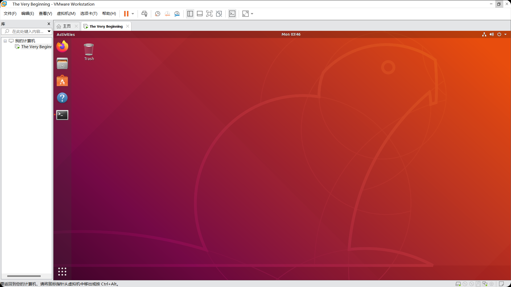 于是就成功做出了第一台虚拟机
接下来尝试把zsh作为默认的shell，并加入oh-my-zsh，参考 https://note.tonycrane.cc/cs/tools/shell/ 和 https://www.haoyep.com/posts/zsh-config-oh-my-zsh/

oh my zsh！
之后可以设置powerlevel 10k主题和安装插件（暂时没安装插件）
0.2 Shell&Linux Basics¶
自学文档
https://slides.tonycrane.cc/PracticalSkillsTutorial/2023-fall-ckc/lec1/#/2/8
b站视频
https://www.bilibili.com/video/BV1ry4y1A7qo/?vd_source=5742e02a7566918d65a441adce5bc163
0.2.1 Command Line Interface(CLI)¶
lab文档要求看 https://ubuntu.com/tutorials/command-line-for-beginners#1-overview （The Linux command line for beginners - Ubuntu.）Section1-5
0.2.1.1The Linux command line for beginners - Ubuntu¶
这里是直接看竺院辅学的视频来学的 https://www.bilibili.com/video/BV1ry4y1A7qo/?vd_source=5742e02a7566918d65a441adce5bc163
prompt 命令提示符，用来等待输入并给出一些信息
最重要的是工作路径，也就是shell所处的位置，路径相关命令有：
pwd(print working directory)获取当前的位置（~代表的就是当前用户的“home”目录）
cd path(change directory):切换路径path可以是相对路径或绝对路径
path中~代表home，.代表当前路径，..代表上一级路径

文件/目录操作命令
ls：列出当前路径下的文件和目录（-a列出所有文件和目录，包括隐藏文件；-l列出详细信息）
touch file：创建一个文件
mkdir dir：创建一个目录
cp src dst：复制文件或目录（-r递归复制目录）
mv src dst：移动文件或目录(重命名)dst如果是文件夹，就有
rm files..：删除文件（-r递归删除目录；-f强制删除）
find path -name pattern：在path下查找文件名匹配pattern的文件文件内容查看命令
cat files ...：输出与拼接文件（-n：带符号输出）
head files：输出file前10行（-n lines：输出前lines行）
tail files：输出file后10行（-n lines：输出后lines行）
more/less file：分页输出file内容
这里留个坑，关于shell的语法之后再补
0.2.2 Linux File System¶
(待)
0.2.3The Advanced Packaging Tool(APT)¶
(待)
0.3 Access the Virtual Machine using SSH¶
0.3.1 basic concepts¶
- IP address
- MAC address
- Subnet mask
- Gateway
- Port
- Port forwarding
https://www.bilibili.com/video/BV1CQ4y1d728/?vd_source=5742e02a7566918d65a441adce5bc163
https://www.bilibili.com/video/BV1DD4y127r4/?vd_source=5742e02a7566918d65a441adce5bc163
0.3.2 Network in Virtual Machines¶
- Ping the virtual machine
step1:Check if the network mode of the virtual machine is set to NAT.
step2:Use the ip addr command to find the IP address of the virtual machine.

From the screenshot, the virtual machine has two network interfaces: ens33 and lo. The latter is the loopback interface, and the former is the network interface used to connect to the network. We can see that the IP address of the virtual machine is 192.168.75.128.
Open a terminal on your host machine and ping the virtual machine.
ping 192.168.75.128
The ouput is like:
0.3.3 SSH¶
Secure Shell (SSH) is a cryptographic network protocol for operating network services securely over an unsecured network. The best-known example application is for remote login to computer systems by users.
More about the Asymmetric Encryption:https://www.youtube.com/watch?v=AQDCe585Lnc
- Connect to the virtual machine using SSH
step1:我选择在虚拟机上操作，一般Linux和macOS上已经预装了SSH client，如果要在windows上装，可以参考：https://learn.microsoft.com/en-us/windows-server/administration/openssh/openssh_install_firstusetabs=gui#install-openssh-for-windows
step2:You also need to install an SSH server on the virtual machine.
sudo apt update
sudo apt install openssh-server
 step3:After installing the SSH server, you can use the ssh command to connect to the virtual machine:
step3:After installing the SSH server, you can use the ssh command to connect to the virtual machine:
ssh username@IP_ADDRESS
Replace username with your username on the virtual machine and IP_ADDRESS with the IP address of the virtual machine.

Now you can copy and paste commands to this terminal. You can also use the scp command to copy files between your computer and the virtual machine. You can also connect your VSCode to the virtual machine using the Remote-SSH extension, but don't rely on it too much.
0.4 More on Linux¶
0.4.1 User and Permissions¶
lab文档给的自学视频是youtube上的 https://www.youtube.com/watch?v=19WOD84JFxA 和 https://www.youtube.com/watch?v=LnKoncbQBsM 两个全英文无字幕视频，为了赶时间我就用中科大文档里的 https://101.lug.ustc.edu.cn/Ch05/#users-and-groups 平替了（还得是中科大）
0.4.1.1 Users and Groups¶
我们可以通过查看 /etc/passwd 文件，来得到系统中用户的配置信息
这里除了很后面的lee用户（没截进去）之外，还有一个特殊的root用户
根用户
之前加上的sudo可以让我们以根用户的身份安装软件（apt安装软件安装在系统目录下，必须要以root用户的身份去安装），/root用户在Linux系统中拥有最高的权限系统用户
除了lee，root之外，还有很多剩下的用户，它们是由系统或相关程序创建，用于执行服务等系统任务。不要随意删除这些用户，以免系统运行出现问题普通用户
普通用户可以登录系统，并对自己的家目录下的文件进行操作。所有普通用户的家目录都在/home/下，位于/home/username/的位置，其中username是用户名
普通用户无法直接修改系统配置，也无法为系统环境安装或卸载软件切换用户
sudo命令可以让你以另一个用户的身份执行指定的命令。当然，它最常见的用途，就是能让普通用户以root的身份执行命令：不加入其他参数，sudo 后面直接加命令；若要以其他用户的身份执行，只要加上“-u 用户名”就行了
关于su和sudo有一小段有趣的解释，具体可以看中科大文档
用户组
用户组是用户的集合。通过用户组机制，可以为一批用户设置权限。可以使用 groups 命令，查看自己所属的用户组
可以看到，lee属于多个用户组。一般在用户创建时，都会创建与其名字相同的用户组文件权限
在 Linux 中，每个文件和目录都有自己的权限。可以使用 ls -l 查看当前目录中文件的详细信息
第一列的字符串从左到右意义分别是：文件类型（一位）、文件所属用户的权限（三位）、文件所属用户组的权限（三位）、其他人的权限（三位）。对于每个权限，第一位 r 代表读取 (Read)，第二位 w 代表写入 (Write)，第三位 x 代表执行 (Execute)，- 代表没有对应的权限。 第三、四列为文件所属用户和用户组。文件系统层次结构
Linux 下文件系统的结构和 Windows 的很不一样。在 Windows 中，分区以盘符的形式来标识（如「C 盘」、「D 盘」），各个分区的分界线是很明确的。在系统所在的分区（一般为 C 盘）中，存储着程序文件 (Program Files)，系统运行需要的文件 (Windows)，用户文件 (Users) 等。这种组织形式源于 DOS 和早期的 Windows，并一直传承下来。
而 UNIX 系列采用了一种不一样的思路组织文件：整个系统的文件都从 /（根目录）开始，像一棵树一样，类似于下图。
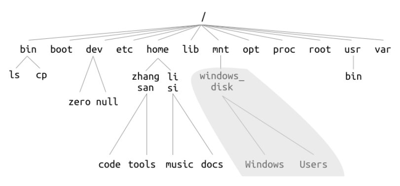
其他的分区以挂载 (mount) 的形式「挂」在了这棵树上，如图中的/mnt/windows_disk/
部分关于文件系统层次结构的文档可以在中科大文档中查看

0.4.1.2 Environment Variables¶
参考文档：https://linuxize.com/post/how-to-set-and-list-environment-variables-in-linux/
0.5 Git¶
这里就是注册一个ZJU Git账号和添加一个SSH Key
好巧不巧，之前正好弄过一个SSH Key，就刚好拿来用了，添加好之后测试一下连接成功
0.6 Lab0 Tasks¶
Task1.1
hush resultTask2.1
nano在中科大文档中有简单介绍：Nano 是在很多机器上自带的命令行文本编辑器，相比于 vim 和 emacs 来说，对新手更加友好，不需要提前记忆复杂的键位
$ nano file.txt # 使用 nano 编辑 file.txt 文件（如果没有则创建）
Nano 启动后，用户可以直接开始输入需要的内容，使用方向键移动光标。在终端最下方是 nano 的快捷键，^ 代表需要按下 Ctrl 键（例如，^X 就是需要同时按下 Ctrl + X）。在编辑完成后，按下 Ctrl + X，确认是否保存后即可。
Task3.2
Task5.2

Lab1:简单集群搭建¶
这是第一次接触到计算机集群的概念：）
本次实验，我们将使用四台虚拟机搭建一个简易的集群，并对该集群进行性能测试，最后提交测试结果和实验报告。
软件安装
- [x] 下载OpenMPI、BLAS和HPL的源代码并编译安装
集群搭建
- [x] 克隆虚拟机 - [x] 配置虚拟机互联 - [x] 测试节点间通信 性能测试
- [x] 在虚拟机集群上使用openMPI运行HPL性能测试，记录测试结果
Bonus（选做）
- [ ] 配置NFS并复现实验 - [ ] 使用Docker复现实验 - [ ] 使用Spack复现实验
1.1 从源码构建Linux应用-以Angband为例¶
在 Linux 生态中，源代码是最通用的软件分发形式。
1.1.1 软件包源码的组织方式¶
进入 Angband 的网站，点击 Source Code，下载最新的源代码压缩包并解压。 wget https://github.com/angband/angband/releases/download/4.2.5/Angband-4.2.5.tar.gz tar xvf Angband-4.2.5.tar.gz cd Angband-4.2.5 ls
开源软件包源码的目录结构 . ├── bin：存放软件包的可执行文件（binary）。 ├── src：存放软件包的源代码文件（source）。 ├── lib：存放软件包的库文件（libraries）。 ├── docs：存放软件包的文档文件，可能包括用户手册、API文档等。 └── README.md：包含软件包的说明文档，通常包括软件包的简要介绍、安装指南和使用说明。
在README.md文件中，维护者描述了如何编译代码，在compile it yourself->Lnux->Native builds中可以找到构建Angband的命令：
./configure --with-no-install
make
运行后，遇到了错误：

这说明我们的虚拟机上没有安装C编译器。这里安装了gcc作为C编译器
sudo apt update
sudo apt install gcc
之后检查一下gcc的位置看有没有安装成功

再次运行，还是有问题
意思是我们还缺了一个用于自动化编译和构建程序的make工具，我们再安装一个build-seeential软件包，其中包含了全面的编译器和构建工具
sudo apt update
sudo apt install build-essential

这时候make就可以被正常找到了
我们再尝试
./configure --with-no-install
make
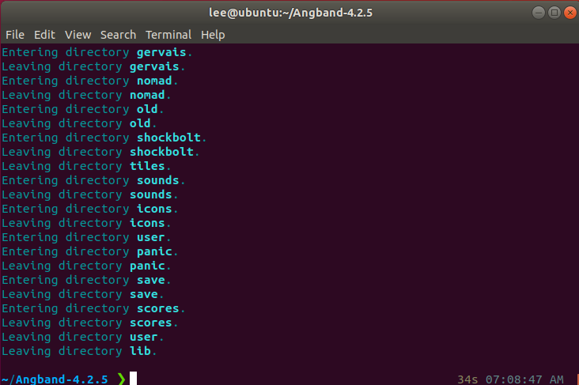
正确执行后，会在src目录下找到angband可执行文件。我们可以尝试运行：

P.S 这里其实还出现了找不到src/angband的问题，但重新下载一次居然就好了
1.1.2 令人头疼的依赖关系与数据库¶
工程开发是多文件编程：编译器将每个代码文件分别编译后，还需要将它们合在一起变成一个软件，合在一起的过程称为链接的过程。具体可以参看wk老师的智云 https://classroom.zju.edu.cn/livingroom？course_id=53613&sub_id=1028201&tenant_code=112
链接分为静态链接和动态链接。静态链接是指在编译时将库文件的代码和程序代码合并在一起，生成一个完全独立的可执行文件。动态链接是指在程序运行时，加载库文件，从而节省存储空间，提高程序的复用性和灵活性。
静态链接 如果你的程序与静态库链接，那么链接器会将静态库中的代码复制到你的程序中。这样，你的程序就不再依赖静态库了，可以在任何地方运行。但是，如果静态库中的代码发生了变化，你的程序并不会自动更新，你需要重新编译你的程序。
在 Linux 系统上，静态库的文件名以 .a 结尾，比如 libm.a。在 Window 上，静态库的文件名以 .lib 结尾，比如 libm.lib。静态库可以使用 ar （archive program）工具创建。动态链接
当你的程序与动态库链接时，程序中创建了一个表。在程序运行前，操作系统将需要的外部函数的机器码加载到内存中，这就是动态链接过程。
与静态链接相比，动态链接使程序文件更小，因为一个动态库可以被多个程序共享，节省磁盘空间。部分操作系统还允许动态库代码在内存中的共享，还能够节省内存。动态库升级时，也不需要重写编译你的程序。
在 Linux 系统上，动态库的文件名以 .so 结尾，比如 libm.so。在 Window 上，动态库的文件名以 .dll 结尾，比如 libm.dll。
链接相关的问题可能出现在链接时（静态链接）、程序运行前和运行中（动态链接）。比如：未定义的应用、缺失.dll（缺少动态链接库）、缺失.so（Linux上的动态库）
由于虚拟机之前没有安装过相关软件包，所以src/angband运行后没有出现游戏界面，而是直接退出了。同时，在./configure中也给出了warning

往上翻还会发现missing libraries

Angband 使用了 ncurses 库来实现游戏界面。但这个库不会被包含在 Angband 的源代码中，也没有默认包含在系统中，因此我们需要手动安装。
通过网络搜索，我们得知 ncurses 库包含在 libncurses5-dev 软件包中，我们可以通过下面的命令安装它：
sudo apt install libncurses5-dev
之后再次运行./configure就能识别到ncurses库了
P.S 这里同样遇到了一些阻碍，刚下载完后运行./configure还是不能识别到ncurses库，关掉terminal重走一遍流程后又好了

至此我们解决了一个简单的依赖问题：Angband->ncurses。在HPC应用中，实际的依赖关系极其复杂，这时我们就将使用自动化工具和包管理器解决部分问题。
1.1.3 不怎么自动的自动化构建工具¶
./configure和make工具用于构建软件包，就是GNU Autotools构建系统中的一部分。关于自动化构建工具（Automated Build Tools）的简介可直接看lab文档，其主要功能包括
编译和链接 依赖管理 代码检查 单元测试 打包和部署
有趣的是Autotools往往能带来一堆问题，但又不得不用它提高效率

lab文档中介绍了两种构建工具的使用方法
1.1.3.1 GNU Autotools¶
GNU Autotools的工作流程一般是：首先使用Autoconf生成configure脚本，然后用configure脚本生成Makefile文件，最后使用Makefile文件编译和链接源代码，生成可执行文件或库文件。写成命令就是：
./configure
make
make install
流程中每个环节都可以定制，如图：

要如何修改这些文件，要阅读README和INSTALL等文件，有时也可以通过为这些命令添加参数来修改行为。
1.1.3.2 CMake¶
CMake 是一个更加现代化的开源的跨平台的构建工具。它使用一种类似于脚本的语言来描述构建过程，然后根据这个描述生成相应的构建文件。与 GNU Autotools 相比，它提供了更多的功能，与更多的现代软件如 IDE 实现了集成，因此在一些项目中取代了 Autotools。但编写 CMakeLists.txt 也比 Makefile 更为抽象，理解和使用难度也更大。它的首要优势是跨平台。

CMake 的另一大优势是缓存。CMake 会在第一次运行时生成一些缓存文件，这个文件记录了所有的配置信息，包括编译器、编译选项、依赖库等。这样，当你修改了源代码后，只需要重新运行 CMake，它就会根据缓存文件重新生成构建文件，而不需要重新进行检查、配置和生成。对于大型项目的增量开发和构建来说，这极大地节约了时间。
CMake 的工作流程一般是：首先编写 CMakeLists.txt 文件，描述项目的目录结构、源代码文件、依赖库等信息，然后使用 CMake 工具生成构建文件，最后使用构建工具（如 make、ninja 等）编译和链接源代码，生成可执行文件或库文件。对应的命令如下：
cmake -B build
cmake --build build
1.2 任务一：从源码构建OpenMPI和HPL¶
对于过程中需要修改Makefile的步骤，需要了解基本的Makefile语法，参考https://www.bilibili.com/video/BV188411L7d2/
1.2.1 Makefile基本语法¶
有这样几个文件，要将它们综合起来工作，可以有以下几种办法：

version 0
直接在terminal中编译
g++ main.cpp factorial.cpp printfhello.cpp -o main
运行
./main
上述行为也可以拆成三个步骤：
g++ main.cpp -c
g++ factorial.cpp -c
g++ printfhello.cpp -c
生成三个.o文件
*g++ .o -o mian**
把三个文件链在一起生成一个.0文件
这样做可以单独编译发生变化的文件，缩短编译时间
version 1
hello:main.cpp printfhello.cpp factorial.cpp
g++ -o hello main.cpp printfhello.cpp factorial.cpp
目标是生成一个名叫hello的可执行程序，hello的生成是依赖于后面三个文件的；使用g++这个命令去实现这个目标
这句话被写在Makefile文件中，当执行make (-f Makefile) 时，就会去找Makefile文件，然后执行
version 2
CXX=g++ TARGET=hello OBJ=main.o prinfhello.o factorial.o
\((TARGET):\)(OBJ)
$(CXX) -o $(TARGET) $(OBJ)
main.o:main.cpp
$(CXX) -c main.cpp
prinfhello.o:printfhello.cpp $(CXX) -c printfhello.cpp
fctorial.o:factorial.cpp
$(CXX) -c
factorial.cpp
P.S 这里的格式有问题,具体直接看视频
实际就是把version 1中的语言变得更正式
version 3
在version 2基础上加一个CXXFLAGS = -c -Wall
简化成：
%.o:%.cpp
$(CXX) $(CXXFLAGS) $< -o %@
实际就是更加抽象化了，具体还是看视频
version 4
再加一个SRC=%(wildcard * .cpp)
就不用再列出cpp文件了，直接把当前目录下所有cpp文件拉进来了
1.2.2 Tasks¶
这几个项目的依赖关系：
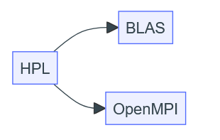
构建并安装OpenMPI
step1：前往OpenMPI官网下载最新版本源码
wget "https://download.open-mpi.org/release/open-mpi/v5.0/openmpi-5.0.3.tar.gz"
tar xvf openmpi-5.0.3.tar.gz
cd openmpi-5.0.3

step2：解压源码
./configure #不带参数，将默认安装到/usr/local/下，此时不需要修改PATH和LD_LIBRARAY_PATH等
step3：构建并安装OpenMPI
make
sudo make install #安装到系统目录 /usr/local 需要root权限
这里出现了一个很尴尬的事情：报错说内存满了
检查一下报错的/tmp中的内存使用
df -h /tmp

确实是满了
思考了一下，由于正好是Lab1，加上之前用ubuntu的时候就打算先试一试（The very beginning），所以就重新开一个VM
这一次我们从ZJU Mirrors上下载Debian ISO，然后正好补一下之前lab0中Task1的坑
ZJU Mirror(极其简陋):
https://mirrors.zju.edu.cn/debian-cd/
Your guide to Debian iso downloads:
https://github.com/slowpeek/debian-iso-guide
这里我选择的是

给的硬件配置

选择的是英文。在lab文档中有一句明确的提示：
Don't set a root password. Read the text on the screen carefully.
If you leave this empty, the root account will be disabled and the system's initial user will be given the power to become root using the sudo command
So, if you set a root password, you will need to add yourself to the sudo group later manually.
所以没有设置root passward
按照lab文档做

 虽然lab文档的意思好像只要SSH server and standard system utilities，但我根本没有这个选项，最后装出来的还是有桌面的虚拟机，时间紧迫，先凑合着用吧
虽然lab文档的意思好像只要SSH server and standard system utilities，但我根本没有这个选项，最后装出来的还是有桌面的虚拟机，时间紧迫，先凑合着用吧
重新下载一下build-essential，重复上面安装OpenMPI的流程
 等了大概几百年之后make完了
等了大概几百年之后make完了

至此回到之前的步骤
step4：
sudo ldconfig # 更新动态链接库缓存
至于为什么要加这一步，可以参考https://lists.nongnu.org/archive/html/libtool/2014-05/msg00021.html
step5：最后确认一下安装信息
ompi_info --all # 查看安装信息
安装完成
构建并安装BLAS
wget "http://www.netlib.org/blas/blas-3.12.0.tgz"
tar xvf blas-3.12.0.tgz
cd BLAS-3.12.0
make
前三句话没有问题，但make的时候会报错：

提示缺少了gfortran，需要下载
sudo apt install gfortran
之后就可以执行make了

构建并安装HPL
step1 wget "https://netlib.org/benchmark/hpl/hpl-2.3.tar.gz" tar xvf hpl-2.3.tar.gz cd hpl-2.3
step2
cp setup/Make.Linux_PII_FBLAS .
这一指令把Make Linux_PII_FBLAS文件复制到执行命令时所在的目录
Make.Linux_PII_FBLAS文件是一个Makefile模板文件，主要用于在Linux系统下，针对特定硬件平台（如PII处理器）和线性代数库（如FBLAS，即Fortran版本的BLAS）配置HPL（High-Performance Linpack）的编译过程。这个文件包含了编译HPL所需的一系列配置指令和变量定义，如编译器选项、库文件路径、头文件路径等。
step3
vim Make.Linux_PII_FBLAS # 修改 Makefile
没有vim就装一个
Vim 是一种高度可配置的文本编辑器，用于有效地创建和更改任何类型的文本。
这里我们要对Makefile文件做一些修改，向下移动光标可以找到需要修改的部分

左边是修改后，右边是修改前
这里用vim修改有特定的方式，具体如下：


make arch=Linux_PII_FBLAS
在Makefile中指定arch=Linux_PII_FBLAS这样的目标架构
这里报两个错：
经过了长时间的调试，始终没有解决这个该死的error，尝试别的途径。。。
发现其他实验者用的都是CBLAS，应该CBLAS中有可以替代该死的libmpich.so的库，试试吧
构建并安装CBLAS
wget http://www.netlib.org/blas/blast-forum/cblas.tgz
tar -zxvf cblas.tgz
太痛苦了
上面都是非常痛苦的尝试，最后我决定重装一台ubuntu
之后交叉参考了三篇文章
https://www.cnblogs.com/Vocanda/p/17436434.html
https://github.com/ForeverHYX/hpl101-su24/blob/master/Report/HPC_Lab1_Report.pdf
https://rzm0572.github.io/Computer-Science/HPC/HPC101-Lab1-Report/
BLAS&CBLAS part
wget "http://www.netlib.org/blas/blas-3.12.0.tgz"
tar xvf blas-3.12.0.tgz
cd BLAS-3.12.0
make
最后将刚下载到的库文件复制到系统库文件
cp blas_LINUX.a /usr/local/lib/libblas.a
(这里报了permission denied所以最后使用sudo的)


接着安装CBLAS
wget http://www.netlib.org/blas/blast-forum/cblas.tgz
tar -xvf cblas.tgz
接下来我们要编译CBLAS文件，得到cblas_LINUX.a
打开Makefile.in，可以看到

我们需要指定BLAS库的路径，刚刚我们已经把blas_LINUX.a复制到了系统库文件，修改路径如下

接着去make

中间有几条warning，但没有error
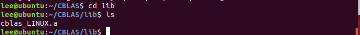
成功在 /CBLAS/lib中生成了cblas_LINUX.a
把它也复制到/usr/local/lib/libcblas.a
sudo cp cblas_LINUX.a /usr/local/lib/libblas.a
sudo cp cblas_LINUX.a /usr/local/lib/libcblas.a
至此，BLAS也配置好了
OpenMPI part
值得一提的是，OpenMPI居然是有官方文档的，而我居然全程没找到过。。。
https://docs.open-mpi.org/en/main/index.html
wget "https://download.open-mpi.org/release/open-mpi/v5.0/openmpi-5.0.3.tar.gz"
tar xvf openmpi-5.0.3.tar.gz
cd openmpi-5.0.3
下载好后把它安装在特定路径
./configure --prefix=/usr/local/openMPI
make
sudo make install
漫长的等待后安装完成，之后需要修改PATH和LD_LIBRARY_PATH(之后讲MPI的时候会提到)，我使用nano打开修改的
nano ~/.bashrc

在 .bashrc的最上面配置环境变量

最后运行一下使修改生效
source ~/.bashrc
至此，OpenMPI配置完成
HPL part
wget https://netlib.org/benchmark/hpl/hpl-2.3.tar.gz
tar -xvf hpl-2.3.tar.gz
cd hpl-2.3
为HPL构建提供一个合适的Makefile文件
cp setup/Make.Linux_PII_CBLAS ./Make.Linux_PII
对这个Make.Linuc_PII文件进行修改
修改如下：
ARCH = Linux_PII_CBLAS -> Linux_PII
TOPdir = $(HOME)/hpl-2.3 -> /home/lee/hpl-2.3
MPdir = /usr/local/mpi -> /usr/local/openmpi
MPinc = -I$(MPdir)/include
MPlib = $(MPdir)/lib/libmpich.a -> $(MPdir)/lib/libmpi.so
LAdir = $(HOME)/netlib/ARCHIVES/Linux_PII -> /home/lee/CBLAS
LAinc =
LAlib = $(LAdir)/libcblas.a $(LAdir)/libatlas.a -> /usr/local/lib/libcblas.a /usr/local/lib/libblas.a -lgfortran
CC = /usr/bin/gcc -> /usr/local/openMPI/bin/mpicc
LINKER = $(CC)

修改完成后，根据刚才修改的Makefile去make
make arch=Linux_PII
这里报了error，发现一个巨大的错误，之前
应该生成libcblas的，结果把原来的libblas.a给覆盖掉了。。。
紧急返工，把原来的给重命名成libcblas.a，再复制一次libblas.a

希望这次可以！
找到了/hpl-2.3/bin/Linux_PII目录下的可执行文件xhpl，我承认这一刻我是有点激动的qwq
至此，软件安装部分完成
1.3 集群环境搭建与配置¶
1.3.1 集群节点间的连接与互访¶
1.3.1.1 网络基础¶
在Lab0中我们已经了解过了关于MAC地址、IP地址和ARP协议的知识，这里再借助gpt回顾一下
IP地址
IP地址（Internet Protocol Address）是互联网协议地址，用于在互联网上唯一标识一个设备。它采用一种分层次的地址结构，由网络号和主机号两部分组成。IPv4是目前广泛使用的版本，它由32位二进制数组成，通常以点分十进制（如192.168.1.1）的形式表示。由于IPv4地址空间有限，已经逐渐被IPv6所取代，IPv6使用128位二进制数表示地址，极大地扩展了地址空间。MAC地址
MAC地址（Media Access Control Address）是媒体访问控制地址，也称为物理地址或硬件地址。它用于在网络中唯一标识一个网络接口控制器（NIC），即网络适配器或网络接口卡（NIC）的硬件地址。MAC地址通常被固化在网卡的ROM中，是网络设备出厂时就分配好的，全球唯一。MAC地址的长度为48位（6字节），通常表示为12个十六进制数，如00-1A-2B-3C-4D-5E。ARP协议
ARP（Address Resolution Protocol）地址解析协议是一种网络层协议，用于将网络层（IP层）地址解析为链路层（数据链路层）地址，即IP地址到MAC地址的映射。在网络通信中，数据链路层协议（如以太网）通过MAC地址来识别网络上的设备，而网络层协议（如IP）则通过IP地址来识别设备。因此，当一台设备想要向另一台设备发送数据时，它必须知道对方的MAC地址。ARP协议就是用来完成这一映射过程的。 ARP协议的工作流程大致如下： 1、请求过程：当一台设备想要发送数据给另一台设备时，它首先检查自己的ARP缓存表中是否有目标IP地址对应的MAC地址。如果没有，该设备会广播一个ARP请求，询问哪台设备拥有该IP地址。 2、响应过程：拥有该IP地址的设备会收到ARP请求，并发送一个ARP响应，其中包含自己的MAC地址。 3、更新缓存：请求设备收到ARP响应后，会将目标IP地址和对应的MAC地址存入自己的ARP缓存表中，并使用这个MAC地址发送数据。 通过这种方式，ARP协议实现了IP地址到MAC地址的动态映射，确保了数据在网络中的正确传输。
1.3.1.2 计算机集群概念¶
计算机集群(Cluster) 是连接在一起、协同工作的一组计算机，集群中的每个计算机都是一个节点。在集群中，由软件将不同的计算任务（task）分配（schedule）到相应的一个或一群节点（node）上。通常会有一个节点作为主节点（master/root node），其他节点作为从节点（slave node）。主节点负责调度任务（当然也可能负责执行部分任务），从节点负责执行任务。此外，也通常会有一个共享的文件系统，用于存储任务数据和结果。

1.3.1.3 SSH的密钥认证¶
在Lab0中，我们已经学习了如何通过 SSH 使用密码访问虚拟机。在集群中，节点之间的互访往往也通过 SSH 完成，但要求无交互（non-interactive），这就需要使用 SSH 的密钥认证（key-based authentication）。
SSH密钥的认证原理
SSH 密钥认证基于密码学中的非对称加密算法。在 SSH 密钥认证中，用户有两个密钥：私钥（private key）和公钥（public key），它们一一配对。私钥只有用户自己知道，公钥可以公开。私钥能够加密数据，公钥能够解密数据。用户可以将公钥放在服务器上，当用户连接服务器时，服务器会用公钥加密一个随机数发送给用户，用户用私钥加密这个随机数，然后用这个随机数加密数据发送给服务器，服务器用公钥解密数据。如果用户能够成功加密，说明用户拥有私钥，连接成功。简单了解非对称加密算法可以看这个视频
https://www.bilibili.com/video/BV1XP4y1A7Ui/?spm_id_from=333.337.search-card.all.click&vd_source=5742e02a7566918d65a441adce5bc163

所谓配置 SSH 密钥认证，就是让服务器信任该公钥，允许持有该私钥的用户连接。在集群中，我们需要在主节点中生成密钥对，将主节点的公钥放在从节点上，这样主节点就能够通过 SSH 密钥认证连接到从节点。
可以阅读How To Configure SSH Key-Based Authentication on a Linux Server - DigitalOcean https://www.digitalocean.com/community/tutorials/how-to-configure-ssh-key-based-authentication-on-a-linux-server 了解如何配置 SSH 密钥认证。
基本操作是
ssh-keygen -t ed25519 # 生成密钥对，使用 ed25519 算法
ssh-copy-id user@hostname # 将公钥放在服务器上
其实课上连接zju clusters就是类似的操作

需要注意的是，认证基于用户。不是说主节点可以连接到从节点，而应当说主节点上的某个用户可以连接到从节点上的某个用户。如果在主节点上为 root 用户生成密钥对，却在从节点上将公钥放置进 test 用户的 .ssh/authorized_keys 文件中，那么显然无法以密钥认证的方式登录到从节点的 root 用户。
1.3.2 MPI的运行方式¶
OpenMPI 是一个开源的 Message Passing Interface 实现。MPI 是一套标准化、可移植的消息传递标准，它被设计用于支持并行计算系统的架构，使得开发者能够方便地开发可移植的消息传递程序。
mpirun是 OpenMPI 提供的 MPI 启动程序，负责在指定的节点上启动 MPI 程序，此后程序间的通信由 MPI 库负责。可以为 mpirun 指定参数，比如启动的进程数、启动的节点等。关于mpirun参考 https://docs.open-mpi.org/en/main/launching-apps/quickstart.html 和 https://docs.open-mpi.org/en/main/launching-apps/ssh.html ,这里只记录最关键部分
1.3.2.1 Quick start: Launching MPI applications¶
Launching on a single host
In such simple “single program, multiple data (SPMD)” cases, use mpirun and specify how many MPI processes you want to launch via the -n option:
在/openmpi-5.0.3/examples中执行mpirun -n 2 hello_c
实际上，可能是因为虚拟机设置的时候只设置了2核，这里只能有2个MPI processes，再增加会报错
只用两个是可以的

这一点其实在 https://github.com/ForeverHYX/hpl101-su24/blob/master/Report/HPC_Lab1_Report.pdf 的OpenMPI检验中体现了
Launching in a non-scheduled environments (via ssh)
In general, Open MPI requires the following to launch and run MPI applications:
1、You must be able to login to remote nodes non-interactively (e.g., without entering a password or passphrase).通过SSH来实现
2、Open MPI’s executables must be findable (e.g., in your PATH).
3、Open MPI’s libraries must be findable (e.g., in your LD_LIBRARY_PATH).
mpirun accepts a --hostfile option (and its synonym, the --machinefile option) to specify a hostfile containing one hostname per line: shell$ cat my-hostfile.txt node1.example.com node2.example.com node3.example.com slots=2 node4.example.com slots=10
mpirun接受一个 --hostfile 选项。这个选项允许用户指定一个文件，该文件列出了运行MPI作业所需的各个主机（或节点）的名称和每个主机上可用的进程数（即slots或cores）。这对于在分布式计算环境中管理MPI作业特别有用，因为它允许用户精确控制作业在哪个主机上运行以及在这些主机上分配多少资源。
--hostfile 选项后面跟随的是包含主机信息的文件的路径。这个文件通常包含每行一个条目的列表，每个条目指定了一个主机名和可选的slots数（如果不指定，则使用默认值）
这一点其实在 https://rzm0572.github.io/Computer-Science/HPC/HPC101-Lab1-Report/ 中体现了，用于检验OpenMPI能否正常工作
The optional slots attribute tells Open MPI the maximum number of processes that can be allocated to that node. If slots is not provided, Open MPI — by default — uses the number of processor cores (not hyperthreads) on that node.
所以在刚才的例子中，输出应该是：
shell$ mpirun --hostfile my-hostfile.txt mpi-hello-world
Hello world, I am 0 of 44 (running on node1.example.com)
Hello world, I am 1 of 44 (running on node1.example.com)
...
Hello world, I am 15 of 44 (running on node1.example.com)
Hello world, I am 16 of 44 (running on node2.example.com)
Hello world, I am 17 of 44 (running on node2.example.com)
...
Hello world, I am 31 of 44 (running on node2.example.com)
Hello world, I am 32 of 44 (running on node3.example.com)
Hello world, I am 33 of 44 (running on node3.example.com)
Hello world, I am 34 of 44 (running on node4.example.com)
...
Hello world, I am 43 of 44 (running on node4.example.com)
各个node使用情况应该是：
node1: 16, because no slots was specified
node2: 16, because no slots was specified
node3: 2, because slots=2 was specified
node2: 10, because slots=10 was specified
Launching in scheduled environments
（略）Using the scheduler to “direct launch” (without mpirun(1)) （略）
1.3.2.2 Launching with SSH¶
When launching Open MPI jobs in a non-scheduled environment, ssh is typically used to launch commands on remote nodes.
其要求就是Launching in a non-scheduled environments (via ssh)中列出的要求
There are three mechanisms for specifying the hosts that an MPI job will run on：
1、The --hostfile option to mpirun.
2、The --host option to mpirun.
3、Running in a scheduled environment.
The specification of hosts using any of the above methods has nothing to do with the network interfaces that are used for MPI traffic. The list of hosts is only used for specifying which hosts on which to launch MPI processes.
If you have a shared $HOME filesystem between your nodes, you can setup a single SSH key that is used to login to all nodes.
Non-interactive ssh logins
SSH keys must be setup such that the following can be executed without being prompted for password or passphrase
简单来说文档里让你自己去搜。。。
Finding Open MPI executables and libraries
Once Open MPI is able to use ssh to invoke executables on a remote node, it must be able to find its helper executables and shared libraries on that remote node.
If Open MPI is installed in a system-level folder (e.g., in /usr/bin), Open MPI will likely be able to find its executables and libraries on the remote node with no additional assistance.
If, however, Open MPI is installed into a path that is not searched by default, you will need to provide assistance so that Open MPI can find its executables and libraries.
For simplicity, it is strongly recommended that you install Open MPI in the same location on all nodes in your job.
Use “prefix” behavior
When “prefix” behavior is enabled, Open MPI will automatically set the $PATH and $LD_LIBRARY_PATH on remote nodes before executing remote commands.(这里格式有问题)
文档里介绍了三种enable perfix的办法
Set the PATH and LD_LIBRARY_PATH in your shell startup files
讲道理没咋看懂，详见文档 https://docs.open-mpi.org/en/main/launching-apps/ssh.html
总结一下：使用 mpirun 在集群中运行 MPI 程序，可以指定节点、进程数和工作路径等。
1.3.3 性能测试Benchmark¶
HPL（high performance Linpack） 是评测计算系统性能的程序，是早期 Linpack 评测程序的并行版本，支持大规模并行超级计算系统。其报告的每秒浮点运算次数（floating-point operations per second，简称 FLOPS）是世界超级计算机 Top500 列表排名的依据。
BLAS 是 Basic Linear Algebra Subprograms 的缩写，是一组用于实现基本线性代数运算的函数库。HPL 使用 BLAS 库来实现矩阵运算，因此需要 BLAS 库的支持。
文档里有关于HPL的数学原理，云里雾里的浏览了一下，过了
总结起来就是：HPL 通过求解线性系统来评估计算机集群的浮点性能
1.4 使用 HPL 测试虚拟机集群的性能¶
1.4.1 连接与互访¶
- 克隆虚拟机并将他们连接互访
用VMware Workstation克隆虚拟机，命名为node01，node02，node03，node04。
选择完整克隆
注意，不只是在 Hypervisor 中修改名字，还需要在虚拟机中修改 /etc/hostname
我们可以用
sudo nano /etc/hostname来修改名称
之后重启
reboot
查看各台虚拟机的ip地址：
ip addr
node01：192.168.75.133
node02：192.168.75.137
node03：192.168.75.138
node04：192.168.75.139获取之后在node01（The One）中修改 /etc/hosts 文件，添加其他节点的IP地址。
sudo vim /etc/hosts
这里不是太清楚怎么修改hosts，文档讲的也不太清楚，先做一个尝试

在 node01 中生成密钥对，将公钥放在其他节点上。
ssh-keygen # 注意不需要为密钥设置密码，全程回车即可

将公钥放在其他节点上
ssh-copy-id user@hostname # 这其实与之前登录ZJU m600时把公钥copy到authorized中是等价的操作
这里尝试的时候报了一个小错误

尴尬的是由于是重装的一台ubuntu，没有下载openssh-server
注意要在每一台VM上装openssh-server
sudo apt update
sudo apt install openssh-server
之后再尝试就可以了
根据文档 https://www.cnblogs.com/Vocanda/p/17436434.html ，我还安装了openssh-client
验证 SSH 密钥认证是否成功
ssh user@hostname
连接成功，注意看红框部分，说明我以lee的身份连接到了名为node02的远程主机，并进入了node02的shell环境
同样的步骤对剩下两台执行
P.S. exit命令可以退出连接；连接时必须得开机

1.4.2 测试MPI正常运行¶
- MPI通过测试可以正常运行
在node01上写一个hostfile，指定节点和进程数
直接新建就好，这里我建在了/home/Documents中
vim /home/Documents/hostfile
当初的core设置的太少了，分配的slot如下

不知道为什么保存到了home里面，cp了一下
使用该 hostfile 执行 mpirun，在所有节点上运行 uptime 或 cat /etc/hostname
mpirun --hostfile hostfile cat /etc/hostname

P.S. 想到自己电脑上运行着一个集群，虽然菜鸡，也是有些兴奋的~
1.4.3 运行HPL¶
- 成功运行HPL跑出结果
终于到了激动人心的部分
使用 mpirun 在所有节点上运行 xhpl，查看运行结果
切换工作目录到 HPL 所在目录，xhpl 需要在工作目录下找到 HPL.dat
cd /hpc-2.3/bin/Linux_PII
切换路径到之前找到xphl可执行文件的地方，运行
mpirun --hostfile /home/lee/Documents/hostfile ./xhpl
铛铛！金色传说！

至此算是结束了lab1的大部分工作
由于我的进度其实大大落后于别人，而技术杂谈这部分内容在lab文档也没有详细阐述，所以只打一个框架在这里，等待之后填坑
1.5 技术杂谈¶
1.5.1 包管理器¶
1.5.2 Docker¶
1.5.3 NFS¶
P.S. 之前都没有用程序块（主要是markdown还不太熟），之后会用der
最后贴几个lab文档中提到的资料，还是要感激cs真的是一门很推崇开源的学科
https://linux.cn/article-14033-1.html
https://www.lrde.epita.fr/~adl/autotools.html
https://elinux.org/images/4/43/Petazzoni.pdf
https://kns.cnki.net/kcms2/article/abstract?v=qwZretP9BaHvUBwZiPjDpzt_KPtU2PXJSK0YVwCUYeCUQFlgxSAJKvStsXKUQgi7vp0dzvK1lhS5OYFXUgXXdKGZL9ljRGRsbRhmjx411BBN35dOaoxrEhTaj2fwikpGLUS9jtc7unQ=&uniplatform=NZKPT&language=CHS
Lab2:向量化计算¶
- 完成双线性插值的向量化版本
- 测试向量化实现的正确性和加速比
从此的lab文档格式更像是实验报告的格式
2.1 实验介绍¶
NumPy是Python中科学计算的基础包。它是一个Python库，提供多维数组对象，各种派生对象（如掩码数组和矩阵），以及用于数组快速操作的各种 API，有包括数学、逻辑、形状操作、排序、选择、输入输出、离散傅立叶变换、基本线性代数，基本统计运算和随机模拟等等。
Numpy代码一般采用向量化（矢量化）描述，这使得代码中没有任何显式的循环，索引等，这样的代码有以下好处：
1、向量化代码更简洁，更易于阅读 2、更少的代码行通常意味着更少的错误 3、代码更接近于标准的数学符号
另外，向量化的代码能够规避掉 Python 中缓慢的迭代循环，被底层的实现更好的调度，如接入 BLAS 矩阵运算库，从而实现更高的性能。
双线性插值是计算机视觉图像处理中的常用算法，他在计算机图形学中也可以用于材质贴图的重采样。
本次实验我们将借助 NumPy 实现一个支持批量处理的向量化的双线性插值，来让大家熟悉 NumPy 的向量化编程模式。
2.2 实验环境¶
直接在vscode上配置一个python环境就好了
import Numpy
Terminal->New Terminal
2.3 实验基础知识¶
2.3.1 Numpy¶
lab文档里并没有关于Numpy本身的介绍，但我觉得这部分基础还是相当重要的，所以简单补一下，也会更偏应用层面
大致框架可以直接看HPC101的ppt Numpy 101
学习内容完全基于NumPy Illustrated: The Visual Guide to NumPy
The beauty of it is that most operations look just the same, no matter how many dimensions an array has. But 1D and 2D cases are a bit special.
1.the 1D Arrays 2.the 2D Arrays
3.the 3D and above
Numpy Array vs Python List¶

在课上提到，python list的存储方式是每个位置存储指向对应元素的指针，所以可以支撑存储不同类型的元素；而numpy array是直接存元素的，所以基本都是相同的元素，也因此NumPy对向量化后的元素处理更快，"more compact,espacially when there's more than one dimension"
Vectors,the 1D Arrays¶
Vector initialization
One way to create a NumPy array is to convert a Python list. The type will be auto-deduced from the list element types:

由于NumPy不方便直接在后面增加元素，所以一般会preallocate the necessary sapce with np.zeros or np.empty:
 It is often necessary to create an empty array which matches the existing one by shape and elements type:
It is often necessary to create an empty array which matches the existing one by shape and elements type:
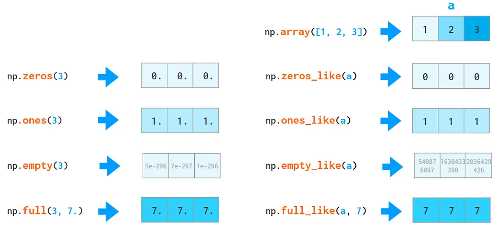
创建递增数列对floats也可以使用，但arrange在处理floats时可能出现问题（这涉及到二进制存储小数和四舍五入）：
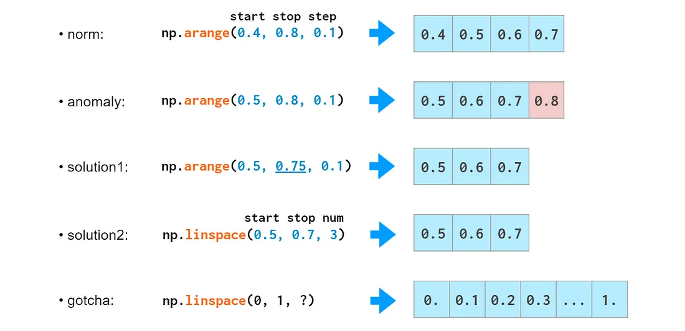
随机数生成
 Vector indexing
Vector indexing
关于切片copy和插入等操作与python list有些不同，具体原理看文档
Also, such assignments must not change the size of the array, so tricks like

won’t work in NumPy — use np.insert,np.append, etc. instead (described in the “2D” section below).
boolean indexing,ternary comparisons,np.where,np.clip,np.minimun,np.maximun 见文档
Vector operations
Arithmetic is one of the places where NumPy speed shines most. Vector operators are shifted to the c++ level and allow us to avoid the costs of slow Python loops.

The same way ints are promoted to floats when adding or subtracting, scalars are promoted (aka broadcasted) to arrays:

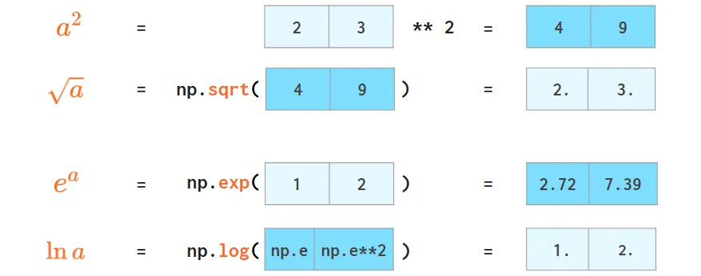


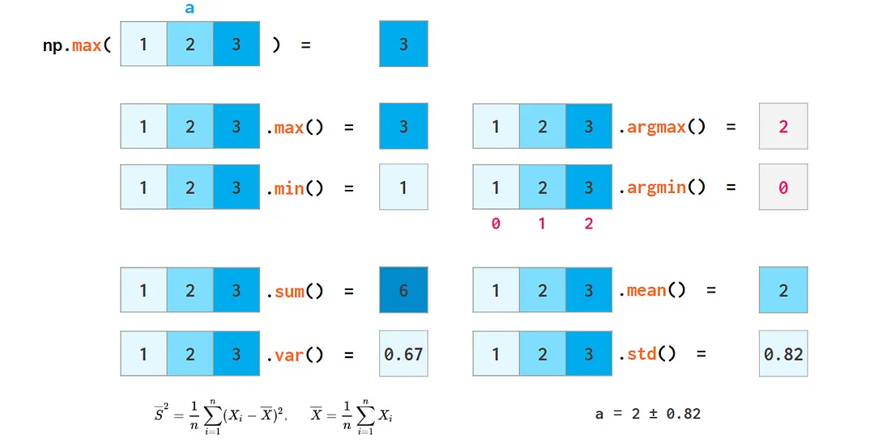

Searching for an element in a vector
A faster way to do it is via accelerating next((i[0] for i, v in np.ndenumerate(a) if v==x), -1) with Numba (otherwise it’s way slower in the worst case than where). 看不太懂，过吧
Comparing floats
There is no silver bullet!
Matrices,the 2D Arrays¶
Matrix initialization


The axis argument
The value of the axis argument is, as a matter of fact, the number of the index in question: The first index is axis=0, the second one is axis=1, and so on. So in 2D axis=0 is column-wise and axis=1 means row-wise.

The 2D case is somewhat counter-intuitive: you need to specify the dimension to be eliminated, instead of the remaining one you would normally think about. In higher dimensional cases this is more natural, though: it’d be a burden to enumerate all the remaining dimensions if you only need to sum over a single one.
Matrix arithmetic
In addition to ordinary operators (like +,-,,/,// and *) which work element-wise, there’s a @ operator that calculates a matrix product:


Row vectors and column vectors
转置这里好像有些特殊机制，但没太看懂

reshape命令个人认为意义不大，总之1D arrays,2D row vectors,2D column vectors之间是可以互相转换的

Matrix manipulations

对于1D arrays似乎有所不同，这与其存储方式有关

The inverse of stacking is splitting:
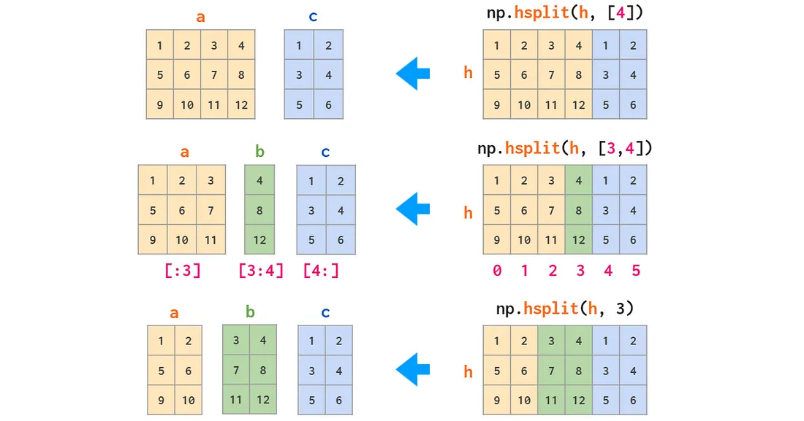
Matrix replication can be done in two ways: tile acts like copy-pasting and repeat like collated printing:
delete

insert

append(is also unable to automatically transpose 1D arrays)

pad其实很像在卷积中的一些外延操作

Mehgrids (略)
Matrix statistics

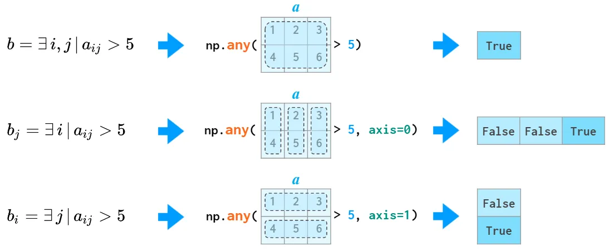
Matrix sorting

3D and Above¶
When you create a 3D array by reshaping a 1D vector or converting a nested Python list, the meaning of the indices is (z,y,x). The first index is the number of the plane, then the coordinates go in that plane:
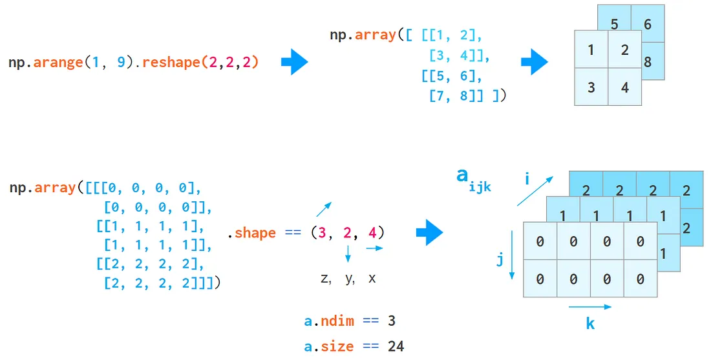
But this index order is not universal. When working with RGB images, the (y,x,z) order is usually used
If your data is laid out differently, it is more convenient to stack images using the concatenate command, feeding it the explicit index number in an axis argument:
3D矩阵的转换之类的看也不想看，但愿这辈子都用不到，过吧
“稍微硬核一点的numpy教程” 如果还要知道的更细致，就直接看numpy文档
2.3.2 双线性插值算法¶
关于双线性插值算法，lab文档里介绍的还是比较清楚的
双线性插值的算法其实非常简单，概括来说就是先在 x 轴上进行一次插值，再在 y 轴上进行一次插值。

以在灰度图上进行插值为例，我们已知外围的四个点 (14,20),(15,20),(14,21),(15,21) 灰度值分别为 91, 210, 162 和 95，然后希望通过插值得到 (14.5,20.2) 处的灰度值。
接下来我们先在 x 方向上通过线性插值计算出 (14.5,20),(14.5,21) 两个点的灰度值 150.5, 128.5，然后再使用这两个值在 y 方向上再次进行线性插值，得到 (14.5,20.2) 坐标处的灰度值 146.1。
注意这里是一个单通道的例子，对于实际的情况，我们往往有很多个通道，如彩色图片拥有 RGB 三个通道，一些图片可能还有 α 透明度通道，或是深度通道。对于多通道的情况，我们需要对每个通道进行分别插值。
lab文档参照wikipedia给出了形式化的定义
假如我们想得到未知函数 f 在点 P=(x,y) 的值，假设我们已知函数 f 在 Q11=(x1,y1), Q12=(x1,y2), Q21=(x2,y1) 及 Q22=(x2,y2) 四个点的值。

首先在 x 方向进行线性插值，得到
然后在 y 方向进行线性插值，得到
注意此处如果先在 y 方向插值、再在 x 方向插值，其结果与按照上述顺序双线性插值的结果是一样的。
2.3.3 NHWC 数据格式¶
一个完全没见过的东西，先问下gpt
NHWC（样本数-高度-宽度-通道） 数据格式是卷积神经网络（CNN）中广泛使用的一种数据组织方式，尤其在处理图像、点云或特征图等多维数据时尤为重要。以下是对NHWC数据格式的详细解析：
一、基本概念 在NHWC格式中，数据按照以下顺序进行排列： N：Batch Size（批次大小），表示一次处理的数据样本数量。 H：Height（高度），表示图像或特征图的高度。 W：Width（宽度），表示图像或特征图的宽度。 C：Channel（通道数），对于彩色图像来说，通常是RGB三个通道。 二、存储方式 在NHWC格式中，数据在内存中的存储方式遵循以下规则： 首先是所有样本的第一个通道的所有元素（即所有样本的第一个像素点的第一个通道值），然后是第一个通道的第二行元素，依此类推，直到第一个通道的所有元素都被存储。 接着是第二个通道的所有元素，按照与第一个通道相同的顺序存储。 依此类推，直到所有通道的所有元素都被存储。 这种存储方式使得相同空间位置（即相同像素点）的所有通道值在内存中连续存储，这有助于优化对空间数据的访问。
然而，需要注意的是，在GPU上进行计算时，NCHW（样本数-通道-高度-宽度）格式可能更加高效，因为它能够更好地利用GPU的并行计算能力和内存访问模式。
lab文档的介绍：
真实情况下我们处理的数据都是以 batch 为单位的，按批进行处理的。以双线性插值为例，我们往往会一次性送入 N 张大小为 H×W 的图片，每个像素上有 C 个通道，然后一次性返回这 N 张图片处理好的结果。此时我们一次性传入的数据，就是直接按顺序堆叠在一起的 NHWC 格式的数组，它将 batch 作为了第一个维度，而后三个维度分别是单张图片的高度、宽度、通道数。你可以将这一数据格式理解为 c 语言中的高维数组 image[N][H][W][C]，而因为 c 的数组和 NumPy 的 ndarray 一样都是在内存里连续排放的，所以对于 image[x1][x2][x3][x4]，其实就是 image[x1 * H * W * C + x2 * W * C + x3 * C + x4] 处的内存。
另一个常见的数据格式是 NCHW，也就是单张图片内通道在前，不过这里我们没有选用。
数据格式更多是对数据的存放顺序进行约定，你可以通过 np.transpose 将不同维度进行调换。
2.4 实验步骤¶
2.4.1 接口定义¶
为了简化任务，我们假定传入的采样点不会出现在 (H1−1,W1−1)，即图像的右下角。
2.4.2 基准代码¶
使用 for 循环迭代计算的双线性插值版本：
2.4.3 完成向量化实现¶
在给出的代码的 bilinear_interp/vectorized.py 中，完成 bilinear_interp_vectorized 函数。
整道题并不难，就是将原来的三重for循环转成向量化后多维一起计算从而节约时间
第一次尝试没有考虑到维数不匹配的问题，出现报错
这里补充numpy的广播规则，来自gpt：
1、如果所有输入数组的维度数不同，形状较小的数组会在前面补1（直到维度数相同）。 2、如果两个数组在某个维度上的大小不同，且其中一个的大小为1，则该维度上大小为1的数组将被扩展（或“广播”）以匹配另一个数组的大小。 3、如果两个数组在任何维度上的大小都不相同且都不为1，则会出现形状不匹配的错误。
在这里，原代码为：
np.nuewaxis用于在数组的指定位置增加一个新的轴（axis），效果等同于在切片操作中指定一个 None 或空切片（:），但它提供了更明确的语义。 当你对一个数组使用np.newaxis时，你实际上是在告诉 NumPy 在数组的指定位置插入一个新的维度，该维度的大小为1。这不会改变数组中的任何数据，只是改变了它的形状（shape）
但遗憾的是这样做虽然能让程序运行，但答案出现了错误：

这个问题属实对我造成了极大的困扰
实际上，对于a[N,H,W]，传入的时候它存了每个点C个通道的值，现在向量化之后，我们要对这些点一起做操作；我们以x_idx和y_idx作为索引把所有点作为整体，这两个索引具有[N,H,W]的三维结构，但是N不具备三维结构，所以我们需要将N拓展为三维的
bilinear_interp_vectorized函数如下：2.4.4 检测实现正确与加速效果¶
运行 main.py，查看输出，一切顺利将看到以下结果：

2.5 实验初始代码¶
接下来让我们回到lab1，回到Linux，去学习Docker并完成lab1的bonus(尝试)
Lab1 bonus¶
在Lab文档中Docker的部分是确实的，仅给出了bonus的任务要求
使用Docker复现实验：
- [ ] 寻找合适的 Docker
- [ ] 创建多个 Docker 实例，使用 MPI 在 Docker 组成的集群中运行 HPL。
所以我们将完全遵循中科大Linux 101（八、Docker） 的学习路径，学习Docker
3.1 Docker¶
3.1.1 为什么使用Docker¶
「容器」，是近年来非常热门的一个概念。它通过操作系统内核提供的隔离技术，实现轻量级的虚拟化环境。目前，它在软件的开发、部署等方面有着非常广泛的应用。 而 Docker，是 Linux 容器技术中的代表性软件，它为用户提供了方便的接口来创建、使用 Linux 容器。
Docker能够利用Linux内核的容器特性，隔离出一个轻便的环境来运行程序，由此可以快速配置不同的环境（比如说，通过Docker，你可以在Ubuntu上使用CentOS的环境），部署应用
3.1.2 安装Docker¶
在Windows或macOS上安装¶
Docker使用了Linux内核的容器特性，所以依赖于Linux，要在这两个系统运行，必须通过虚拟虚拟Linux内核的方式，可以使用一套Docker Desktop的软件，具体内容见文档
在Linux上安装¶
首先给出Docker install的官方文档
注意，在Debian/Ubuntu上，不要运行
sudo apt install docker此时安装的是一个系统托盘程序，和这里的Docker没有关系
docker.op 是由Debian/Ubuntu维护的Docker版本，比官方最新版稍微老一点
docker-ce 是由Docker官方维护的。它依赖的程序库都被打包在这个包中
Docker官方提供的Docker社区版建议安装脚本
这里有个小插曲，想下载curl发现虚拟机连不上网，最后发现是因为使用了梯子没把梯子关掉直接关机了，这里可以采用以下方法：
尝试了一下，用不了，得用镜像网站，所以最后找了篇CSDN文章 跟着下的
配置Registry Mirror¶
Docker 默认从 Docker Hub 上拖取所需要的镜像。但由于网络原因，拖取的过程可能会比较慢。一些服务在中国提供了 Docker Hub 的镜像（反代缓存）。以下内容以网易云与百度云为例。
为了使用这些Docker Hub镜像，在Ubuntu上可以编辑 /etc/docker/daemon.json 文件（如果文件不存在，请新建一个），写入以下内容
sudo systemctl restart docker 重启Docker服务，再次运行 docker info 命令，可以看到
说明Docker Registry Mirror已经配置好了
使用Hello World测试Docker安装¶
尝试运行 docker run --rm hello-world 拉取hello-world镜像，但是没用成功

文档里给出的科大镜像站Docker Hub registry mirror 需要校园网，所以在98（原贴）上找了浙大的镜像站
进入之后启用服务
登录命令
/etc/docker/daemon.json 为：不过这不重要
尝试运行 docker run --rm hello-world 命令
说明Docker已经一切就绪
3.1.3 使用Docker¶
在Ubuntu容器中使用shell¶
首先看一段命令
--rm 代表容器停止运行（退出）后会被删除--name 参数代表给容器起名字，如果没有这个参数，那么docker会给容器随机起一个给是类似于gracious_brahmagupta的名字-it 是为了获得可交互式的Shell所必须的。-i会将容器的init（主进程，这里是 /bin/bash ）的标准输入与docker这个程序的标准输入相连接；而 -t 会告诉主进程输入为终端（TTY）设备
在执行这行命令后，会得到一个Ubuntu20.04的容器环境，退出Shell后容器会被销毁
如果没有加上 --rm ，退出后可以使用 docker ps -a 查看系统中的所有容器
P.S 事实证明还是要挂镜像来下载，比如下载ubuntu容器环境
docker run -it --rm --name ubuntu-container dockerhub.zjusct.io/library/ubuntu:24.04
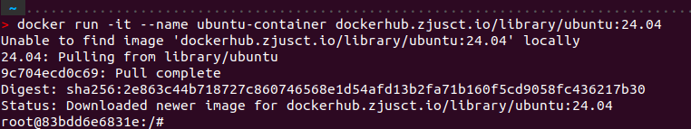
exit 可以直接退出容器
使用
-a 代表连接输出以及信号。最后的 ubuntu-container 指代我们刚刚创建的那个容器。也可以输入容器的ID来启动（不需要输入完整ID，只需要前几位即可）：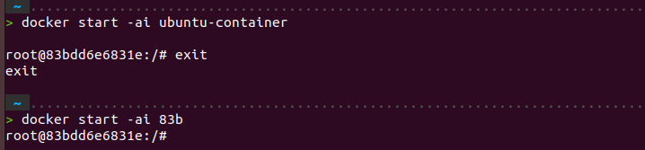
与
docker start 相对应，docker stop 可以关闭一个容器， docker rm 可以删除一个容器在Python容器中使用Python命令行¶
在MkDocs容器运行文档¶
（略）
3.2 尝试使用Docker复现Lab1¶
其实我完全还不清楚要怎么用Docker来复现集群的搭建，但我觉得Docker和虚拟机应该是十分类似的，我的基本想法是：在一个ubuntu容器中搭建一个类似之前The one一样的主节点，把它创建成镜像。用这个镜像再创建三个容器（类似于克隆虚拟机），让他们互相ping通，形成集群
3.2.1 在ubuntu-container容器中复现The one的环境¶
基本和Lab1中对The one的配置一样，不过一进去的时候所在的位置是root，为了完全与之前的流程一致，我cd到了home目录下的ubuntu路径下去执行操作。
ubuntu—container创建的时候只有root用户，这是十分危险的，所以还是先创建一个用户为好
之后 su lee 切换用户
神奇的是，这个容器居然没有sudo命令，我用lee的身份去cp文件，居然permission denied。只能exit到root用户去装了一个sudo，后面又设定了一下lee用户的密码
/etc/sudoers ，添加
在配置CBLAS进行make的时候，本来的warning变成了error，需要在Makefile.in中对编译选项进行修改
之后的构建与之前完全一致，但在测试OpenMPI的时候出现了问题

由于时间问题，该报错仍然没有解决
3.2.2 手动构建镜像¶
由于使用Dockerfile自动构建镜像（较为推荐的路径）需要一定的学习，这里就先尝试手动构建
先从之前的镜像退出来，查看当前容器的情况

手动构建

这样就可以在 images 中看到这个镜像

我们可以用

但是在容器之间的网络问题上完全没有相关知识，所以bonus到这里也确实进行不下去了，先这样吧
Lab2.5-Bonus 手写 SIMD 向量化¶
4.1 实验基础知识¶
现代处理器一般都支持向量化指令，x86 架构下 Intel 和 AMD 两家的处理器都提供了诸如 SSE，AVX 等 SIMD 指令集，一条指令可以同时操作多个数据进行运算，大大提高了现代处理器的数据吞吐量。
现代编译器的高等级优化下会自动向量化，对于结构清晰，循环边界清晰的程序，编译器的自动向量化已经可以达到很优秀的程度了。然而，编译器的优化始终是保守的，很多情况下编译器无法完成使用 SIMD 指令进行向量化的工作
显然直接手写汇编指令过于困难，在 C 语言环境下，Intel 提供了一整套关于 SIMD 指令的函数封装接口和指令相关行为的参照手册
调用这些函数API(Application Programming Interface，应用程序编程接口)需要include相应头文件，如
这个级别的优化开始需要考虑具体处理器的体系结构基础细节，如某个架构下某条指令的实现延时和吞吐量是多少，处理器提供了多少向量寄存器，访存的对齐等等。
这种时候编译器具体产生的汇编代码能比 C 语言代码提供更多的信息，你能了解到自己使用了多少寄存器，编译器是否生成了预期外的代码等等。
4.2 实验步骤¶
题目的格式好像有点问题，看不完整
baseline如下, 简单来说就是进行MAXN次D4*4=A4*12\(\times\)B12∗4的矩阵乘法. 其中MAXN个矩阵的内容不同, 计算的时候要注意位移
在编译时添加以下选项可以允许编译器生成使用 AVX2 和 FMA 指令集的代码，如果你使用了其它不在编译器默认范围内的指令集，类似的编译选项是必要的。
4.2.1 实验初始代码 multi.cpp¶
看完baseline发现是老熟人了，这其实就是SEGMM，只不过在PAC比赛里支持的是ARM指令集，而在这里要用AVX指令集，而且这里的矩阵规模是确定的，行数和列数都是4的倍数，结果矩阵就是一个4\(\times\)4的矩阵，不需要处理boundary case。只需要学习一下AVX指令集，做一个替换就好。
4.2.2 AVX指令集¶
这里只列举代码中使用到的:
_mm256_setzero_pd
_mm256_loadu_pd
_mm256_set1_pd
_mm256_fmadd_pd
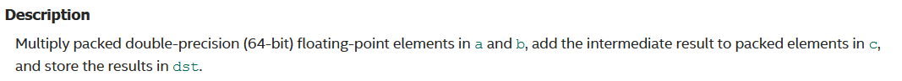
_mm256_storeu_pd
4.2.3 优化思路¶
效率角度来说用AVX-512同时进行8个double数的运算效率应该会更高，但考虑到a，b矩阵分别固定为4\(\times\)12和12\(\times\)4的规模，行数和列数都是4的倍数，我选择了_m256d的数据类型，同时进行4个double数的向量运算。
由于结果矩阵本身就是4\(\times\)4的规模，也就意味着a矩阵的block就是4\(\times\)12，b矩阵的block就是12\(\times\)4，都只需要扫描读取一次，因此没有packing的必要。
优化后的代码multi_pro.cpp
1 2 3 4 5 6 7 8 9 10 11 12 13 14 15 16 17 18 19 20 21 22 23 24 25 26 27 28 29 30 31 32 33 34 35 36 37 38 39 40 41 42 43 44 45 46 47 48 49 50 51 52 53 54 55 56 57 58 59 60 61 62 63 64 65 66 67 68 69 70 71 72 73 74 75 76 77 78 79 80 81 82 83 84 85 86 87 88 89 90 91 92 93 94 95 96 97 98 99 100 101 102 103 104 105 106 107 108 109 110 111 112 113 114 115 116 117 118 119 120 121 122 123 124 | |
这是一个非常常规的SIMD，在不使用编译器优化选项的情况下，首次编译运行的结果如下
多次运行后加速比基本稳定在2x上下
4.3 godbolt¶
godbolt 是一款基于 web 的研究不同编译器编译产生汇编代码的工具，借助它我们可以从汇编代码中获得更多信息。
这个在线工具其实就是把代码转换成汇编语言（然鹅我对汇编是完全不会的）。快速学习汇编，找了一篇CSND
使用编译：x86-64 gcc 14.1 编译选项：-mavx2 -mfma
for 循环实现的汇编代码
AVX指令集实现的汇编代码
1 2 3 4 5 6 7 8 9 10 11 12 13 14 15 16 17 18 19 20 21 22 23 24 25 26 27 28 29 30 31 32 33 34 35 36 37 38 39 40 41 42 43 44 45 46 47 48 49 50 51 52 53 54 55 56 57 58 59 60 61 62 63 64 65 66 67 68 69 70 71 72 73 74 75 76 77 78 79 80 81 82 83 84 85 86 87 88 89 90 91 92 93 94 95 96 97 98 99 100 101 102 103 104 105 106 107 108 109 110 111 112 113 114 115 116 117 118 119 120 121 122 123 124 125 126 127 128 129 130 131 132 133 134 135 136 137 138 139 140 141 142 143 144 145 146 147 148 149 150 151 152 153 154 155 156 157 158 159 160 161 162 163 164 165 166 167 168 169 170 171 172 173 174 175 176 177 178 179 180 181 182 183 184 185 | |
其实感觉也看不出什么东西来。for 循环的实现中
for 循环减少到了两个，使用AVX指令集后向量运算也比较简洁，但是向量运算前后的load和重新写入内存的开销明显更多，对内存的读写应该是可以进一步优化的。
Lab5 简单神经网络训练与加速¶
- Transformer 模型的训练
实验介绍¶
深度学习（Deep Learning） 是机器学习的分支，是一种以人工神经网络为架构，对数据进行表征学习的算法。其中，网络的训练过程对算力的要求巨大，也因此成为 HPC 领域经常研究的话题。
注意力机制（Self-Attention） 是深度学习中的一种网络结构，也是 Transformer 架构中的核心部分。
实验环境¶
集群提供两张 A100 40G，一张 A100 80G 和两张 2080ti 显卡。
新建一个 python 版本为 3.12 的空环境，并使用 pip install -r requirements.txt 安装所必须的包。
这里我重装了一台 Ubuntu 虚拟机，在这个很干净的系统上装了 VS Code 和 Ananconda。接着在 VS Code 中使用 conda 配置 Python 虚拟环境，具体可以参考 CSDN。
这里下载包用的是清华源，总体效果非常好
然后在虚拟机上配置 SSH 连接到 ZJUSCT 的集群。在使用 Terminal 成功 ping 通后又尝试了在 VS Code 中用 Remote-SSH。如果是 Terminal 直接连接的话只要把端口设置为 -p 443 即可；如果是用 Remote-SSH 需要挂上浙大的 RVPN（看98上说默认的22端口被封住了，应该是也必须从443端口连接，不过我没有试验）。
实验基础知识¶
这个实验本质就是在复现那篇著名的文章 Attention Is All You Need 中基于 Transformer 架构的机器翻译。那么首先就要理解 Transformer 架构。
对 Transformer 形成一个框架可以看b站视频，接着看 3Blue1Brown 可视化 Transformer 的两个视频。
Model Architecture¶
Attention¶
An attention function can be described as mapping a query and a set of key-value pairs to an output, where the query, keys, values, and output are all vectors. The output is computed as a weighted sum of the values, where the weight assigned to each value is computed by a compatibility function of the query with the corresponding key.
Embeddings and Softmax¶
Similarly to other sequence transduction models, we use learned embeddings to convert the input tokens and output tokens to vectors of dimension dmodel . We also use the usual learned linear transformation and softmax function to convert the decoder output to predicted next-token probabilities. In our model, we share the same weight matrix between the two embedding layers and the pre-softmax linear transformation. In the embedding layers, we multiply those weights by \(\sqrt{d~model~}\).
Positional Encoding¶
Since our model contains no recurrence and no convolution, in order for the model to make use of the order of the sequence, we must inject some information about the relative or absolute position of the tokens in the sequence. To this end, we add "positional encodings" to the input embeddings at the bottoms of the encoder and decoder stacks. The positional encodings have the same dimension dmodel as the embeddings, so that the two can be summed. There are many choices of positional encodings, learned and fixed [9].
In this work, we use sine and cosine functions of different frequencie:
We chose this function because we hypothesized it would allow the model to easily learn to attend by relative positions, since for any fixed offset k, PEpos+k can be represented as a linear function of PEpos.

Add & Norm¶
For each item of a batch, we calculate a mean value and a variance independently, and then calculating the new value for each of them using their own mean value and their own variance.
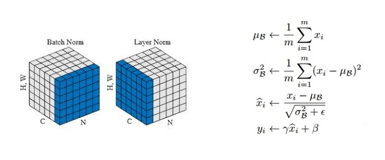
We also introduce two parameters, usually called gamma(multiplicative) and beta(additive) that introduce some fluctuations in the data, because maybe having all values between 0 and 1 may be too restrictive for the introduce fluctuations when necessary.
Position-wise Feed-Forward Networks¶
In addition to attention sub-layers, each of the layers in our encoder and decoder contains a fully connected feed-forward network, which is applied to each position separately and identically. This consists of two linear transformations with a ReLU(Rectified Linear Unit) activation in between.
While the linear transformations are the same across different positions, they use different parameters from layer to layer. Another way of describing this is as two convolutions with kernel size 1. The dimensionality of input and output is dmodel = 512, and the inner-layer has dimensionality dff = 2048.
Multi-Head Attention¶
Instead of performing a single attention function with dmodel-dimensional keys, values and queries, we found it beneficial to linearly project the queries, keys and values h times with different, learned linear projections to dk, dk and dv dimensions, respectively. On each of these projected versions of queries, keys and values we then perform the attention function in parallel, yielding dv-dimensional output values. These are concatenated and once again projected, resulting in the final value.
Multi-head attention allows the model to jointly attend to information from different representation subspaces at different positions. With a single attention head, averaging inhibits this.
Where the projections are parameter matrices WQ ∈ Rdmodel×dk , WK ∈ Rdmodel×dk , WV ∈ Rdmodel×dv and WO ∈ Rhdv×dmodel.
In this work we employ h = 8 parallel attention layers, or heads. For each of these we use dk = dv = dmodel/h = 64. Due to the reduced dimension of each head, the total computational cost is similar to that of single-head attention with full dimensionality.
To sum up:
Encoder Stacks¶
The encoder is composed of a stack of N = 6 identical layers. Each layer has two sub-layers. The first is a multi-head self-attention mechanism, and the second is a simple, position-wise fully connected feed-forward network. We employ a residual connection around each of the two sub-layers, followed by layer normalization. That is, the output of each sub-layer is LayerNorm(x + Sublayer(x)), where Sublayer(x) is the function implemented by the sub-layer itself. To facilitate these residual connections, all sub-layers in the model, as well as the embedding layers, produce outputs of dimension dmodel = 512.
Decoder Stacks¶
The decoder is also composed of a stack of N = 6 identical layers. In addition to the two sub-layers in each encoder layer, the decoder inserts a third sub-layer, which performs multi-head attention over the output of the encoder stack. Similar to the encoder, we employ residual connections around each of the sub-layers, followed by layer normalization. We also modify the self-attention sub-layer in the decoder stack to prevent positions from attending to subsequent positions. This masking, combined with fact that the output embeddings are offset by one position, ensures that the predictions for position i can depend only on the known outputs at positions less than i.